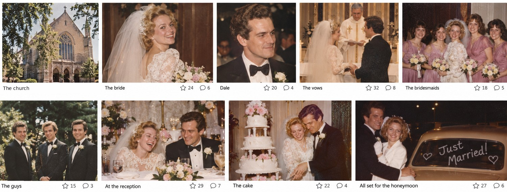

Finally got around to scanning some of the old prints. I had forgotten how young we looked. Such a good day, and a lot of dancing.
Added May 2011 · Dayton, Ohio · 35mm scans

Comments
Tom R.May 13, 2011
Those old pictures are great. Looks like a terrific party.
Those old pictures are great. Looks like a terrific party.
Marjorie HubbardMay 13, 2011
We were still talking about the band the next morning.
We were still talking about the band the next morning.
Carol J.May 16, 2011
Save a copy of the one with the whole wedding party for me!
Save a copy of the one with the whole wedding party for me!
That dress! I remember how happy you both were.